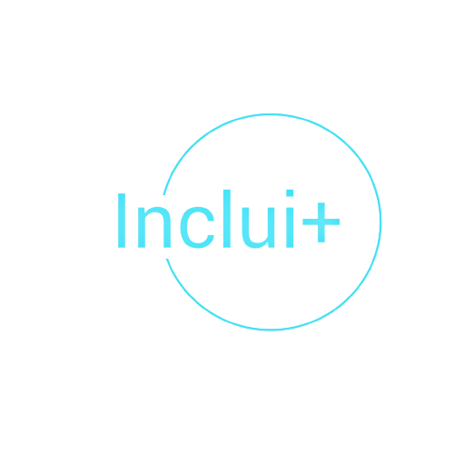
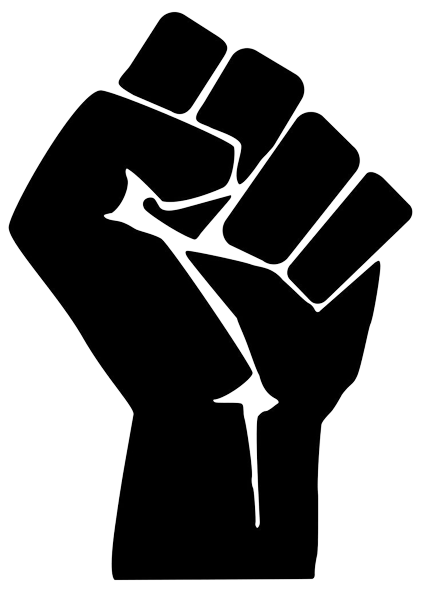
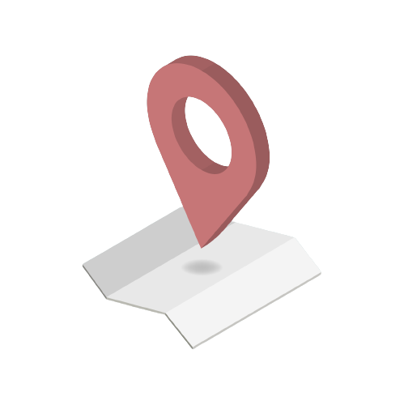
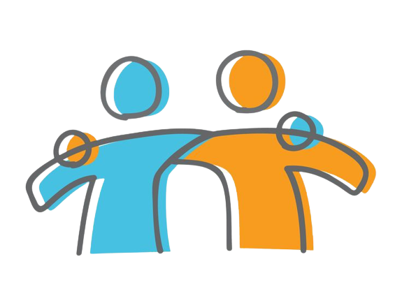

|  |
Olá, nós somos a Inclui+Seja bem-vindo ao nosso espaço, aqui nós acreditamos que todos devem ter acesso aos mesmos serviços, independentemente das suas limitações físicas. Foi por isso que nos unimos e decidimos criar o Inclui+. Com o Inclui+, você poderá facilmente encontrar estabelecimentos e serviços que oferecem acessibilidade, como rampas de acesso, banheiros adaptados, elevadores, e muito mais. Além disso, você poderá conferir as avaliações de outros usuários, garantindo que você está escolhendo o melhor local para suas necessidades. |
Contra o que lutamos?A inclusão de pessoas com deficiência é um tema crucial no Brasil e em todo o mundo. Apesar de muitos avanços terem sido alcançados nas últimas décadas, ainda há muito a ser feito para garantir que as pessoas com deficiência sejam totalmente incluídas na sociedade e tenham acesso a oportunidades igualitárias. A falta de acessibilidade é uma das principais barreiras enfrentadas pelas pessoas com deficiência. Muitas vezes, as infraestruturas e edifícios não são projetados para atender às necessidades de pessoas com deficiência física, visual ou auditiva. Além disso, muitas vezes faltam recursos para fornecer adaptações adequadas, como rampas de acesso, sinalização em braile ou intérpretes de língua de sinais. |
 |
O que falta?Quando as instalações e serviços não são projetados para atender às necessidades das pessoas com deficiência, elas são frequentemente deixadas de fora de atividades e oportunidades que outras pessoas consideram naturais. Isso pode levar a uma série de problemas, incluindo isolamento social, impedindo que as pessoas com deficiência participem de eventos sociais e comunitários, Dificuldades de mobilidade (por exemplo, a falta de rampas de acesso pode impedir que as pessoas em cadeiras de rodas acessem edifícios públicos ou privados, enquanto a falta de sinalização adequada pode dificultar a navegação para pessoas com deficiência visual), limitações de emprego dificultando para elas competir por empregos e avançar em suas carreiras |
|
Nosso objetivoQueremos transformar vidas por meio da inovação e tecnologia, fazendo da inclusão e acessibilidade uma realidade para todos |
|
|  |
Como faremos isso?Criaremos um aplicativo que mapeie estabelecimentos que ofereçam suporte para pessoas com deficiência. Além disso, o aplicativo contaria com um sistema de descontos oferecidos pelas empresas, que buscam aumentar o número de clientes e fazer de um mundo justo e acessível para todos. O aplicativo consiste em uma página de reviews de restaurantes, museus e outros locais culturais que informa ao usuário se o local possui infraestrutura adequada, como por exemplo cardápio em braile, elevadores ou rampas, se permite a entrada de cães guia, etc. |
ParceriasAo fazer uma parceria com o Inclui+, as empresas poderiam disponibilizar informações sobre os recursos de acessibilidade que oferecem, atraindo um público mais amplo e demonstrando seu compromisso com a inclusão. A empresa também poderia receber feedbacks dos usuários do aplicativo, ajudando a identificar oportunidades de melhoria e aprimorando seu serviço. Por fim, a parceria com o Inclui+ pode ser uma excelente oportunidade para empresas que desejam investir em responsabilidade social e gerar impacto positivo na comunidade. Além de oferecer um serviço inclusivo e melhorar a experiência de seus clientes, a empresa poderá se beneficiar com um aumento de lucro e de visibilidade no mercado. |
 |